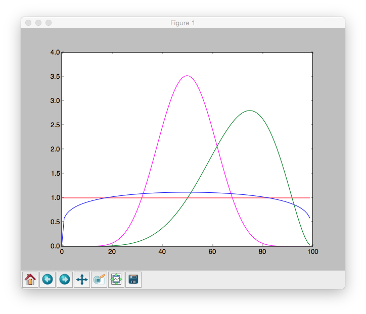
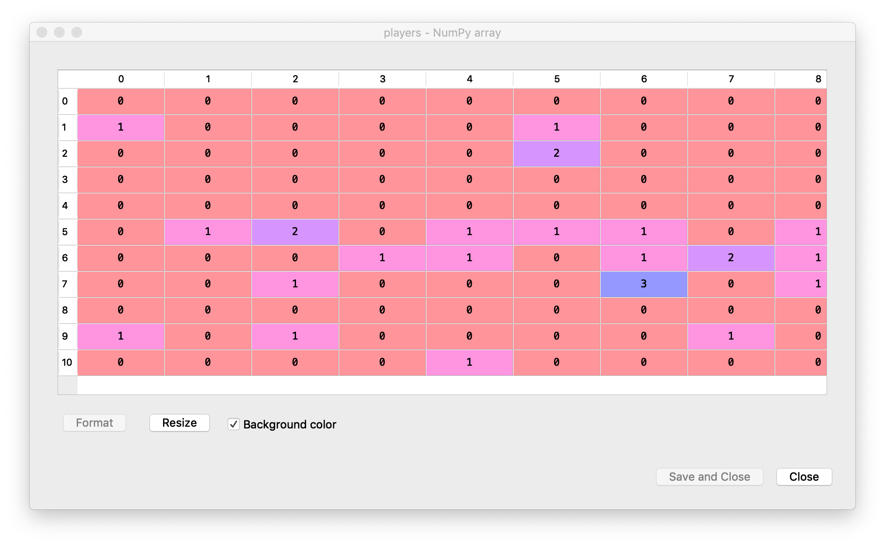
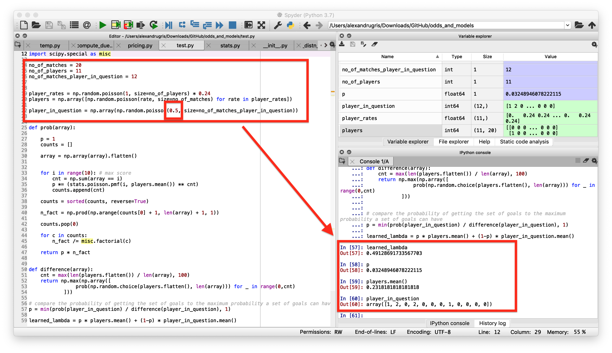
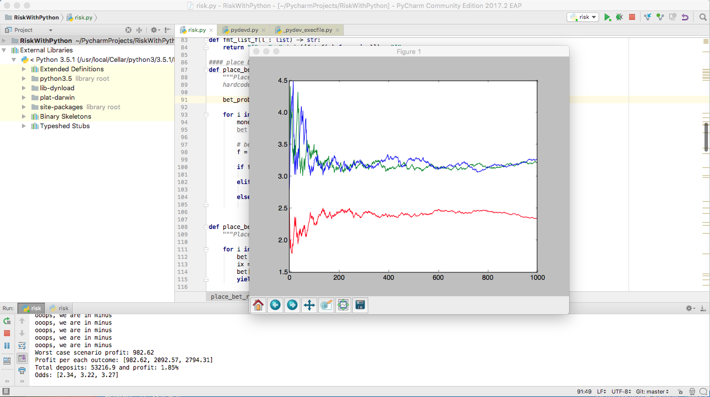
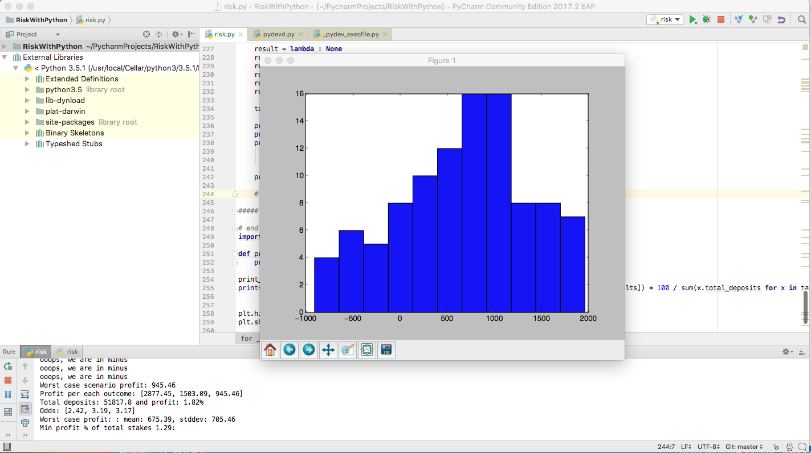
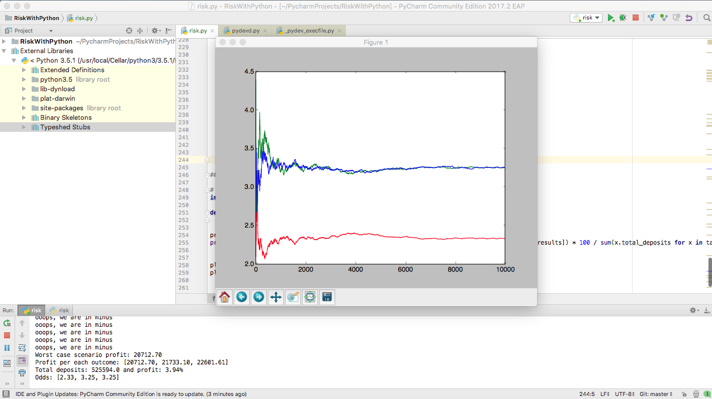

Risk-based Odds Adjustment Using Bayesian Inference
This post attempts to sketch a solution to a problem a bookmaker might have: starting from a predefined set of odds, how do we adjust them so that the risk for the bookmaker is minimized? We take into consideration the financial stakes the bettors have in the game, the total financial risk the house is willing to take and will only analyse the 1x2 market (home-draw-away), to keep the code clean.
We can express the problem in the following bayesian terms: assuming that bettors place bets according to their assessment of the market and that the money they stake is proportional to the confidence they have in a specific outcome, given that a bettor places a specific amount of money on an outcome (event occured), how does this knowledge influence our assessment of the real odds?
Bayesian Inference Basics
In simple terms, Bayesian Inference tries to solve problems which revolve around the following pattern: "given our belief of the world at a certain point of time, if new evidence becomes available, how do these affect our beliefs"? Or, put differenly, "given a model of the world with a set of a priori parameters, if new evidence becomes available, how will the parameters change to incorporate this new evidence?"
Examples of problems that can be solved through Bayesian Inference
-
One might believe a coin is slightly biased with and heads will turn with a probability PH while tails will turn with a probability PT. By starting a set of trial,
one can adjust the PH and PT according to the results of each trial, having the model migrate towards the real probabilities. -
Evaluating the success of a marketing campaign, by counting the clicks on a set of ads, so that the most successful ad is presented to the customer. In such a case, we can start with a "all the same" approach and then adjust display probabilities according to click data that comes through in real time and with minimum computational overhead.
-
Given a number of clicks or misses on an add, what is the probability of the next user to click on it?
-
Archaeological dating based on the types of objects found on the site wikipedia
Bayes' Theorem
Vocabulary:
- Posterior probability
P(hypothesis | evidence): what we want to know, the probability of a hypothesis given the observed evidence. - Prior probability
P(hypothesis): the estimate of the probability before the evidence appears - Probability of observing the evidence given the hypothesis
P(evidence | hypothesis) - Probability of the event to happen:
P(E)
P(H | E) = P(E | H) * P(H) / P(E)
Worked examples:
- Given that a medical test offers 99% accuracy in detecting a desease and given that the desease appears in 1 in 100 individuals, if you score positive on the test, what is the probability of you actually having the disease?
90% accuracy means that 99% of the people tested and have the disease test positive, while 1% of the people that don't have the disease also test positive. We also consider the opposite to be true: if the test gives a negative result, 99% probability you don't have the disease.
P(have the disease given if you scored positive on the test) = P(hypothesis | evidence)P(you have the disease from the whole population) = P(hypothesis) = 1/100P(scored positive on the test if you had the disease) = P(evidence | hypothesis) = 99/100P(event) = P(scored positive on the test) = P(have the disease and scored positive) + P(don't have the disease and scored positive) = (99/100) * (1/100) + (1/100) * (99/100)
P(H|E) = (P(E|H) * P(H)) / P(E)
P(H|E) = ((99/100) * (1/100)) / ((99/100) * (1/100) + (1/100) * (99/100) = 1/2 = 50%
- A family has two children. The first born is a boy. What is the probability that the second one is a boy?
Obviously, two independent events, the answer is 1/2.
- A family has two children. One of them is a boy. What is the probability that the family has two boys?
P(the family has two boys | one of them is a boy) =
P(if a family has two boys, the probabiliy that one of them is a boy) * P(a family has two boys) /
P(at least one of the children is a boy in a family with two children)
P(H|E) = (1 * 1/4) / (1 - P(both children are girls)) = (1/4) / (3/4) = 1/3
Beta Distribution and Bayesian Inference
In Bayesian inference, the beta distribution is the conjugate prior probability distribution for the Bernoulli, binomial, negative binomial and Geometric distribution Wikipedia.
This means that, given our initial knowledge of a system, as new events come, we can adjust our knowledge by simply updating the beta distribution parameters.
def B(alpha, beta):
return math.gamma(alpha) * math.gamma(beta) / math.gamma(alpha + beta)
def beta_pdf(x, alpha, beta):
if x < 0 or x > 1:
return 0
return x ** (alpha - 1) * (1 - x) ** (beta - 1) / B(alpha, beta)
def center(alpha, beta):
return alpha / (alpha + beta)
def beta_pdf_array(alpha, beta, count):
x_ = [x for x in range(0, count)]
return x_, [beta_pdf(x / count, alpha, beta) for x in x_]
Here are some charts for various parameters of alpha and beta:
x, y = beta_pdf_array(1, 1, 100)
plt.plot(x, y, color="red")
x, y = beta_pdf_array(1.2, 1.2, 100)
plt.plot(x, y, color="blue")
x, y = beta_pdf_array(10, 10, 100)
plt.plot(x, y, color="magenta")
x, y = beta_pdf_array(7, 3, 100)
plt.plot(x, y, color="green")

The larger alpha and beta are, the narrower the distribution is. For example, if alpha and beta are both 1, it’s just the uniform distribution (centered at 0.5, very dispersed).
If alpha is much larger than beta, most of the weight is near 1.
So let’s say we assume a coin toss experiment, with a probability of p for heads to appear. If we don’t want to take a stand on whether the coin is fair, we choose alpha and beta to both equal 1. Or maybe we have a strong belief that it lands heads 55% of the time, and we choose alpha equals 55, beta equals 45. The higher the numbers for alpha and beta are, the tighter the distribution is and a stronger belief we express.
When we flip our coin a several times and see h heads and t tails, Bayes’s theorem and additional mathematics tell us that the posterior distribution for p is again a Beta distribution, with adjusted parameters alpha + h and beta + t. We will use this result when we will compute the odds adjustments later in this post, based on the possible returns of a series of bets.
A Counting Problem First
Before getting to odds adjustments, we will solve another problem, but this time through counting. Let's assume we have a cluster of N players for which we have the results from the last M matches. Another player is classified as similar to these N players, but we only have his results for the last P matches, with P < M*N. What is the expected probability to score for this player?
The problem is interesting because (a) player-to-score is rare event and (b) the number of recent relevant matches a player plays in is rather limited, as his performance changes across seasons, teams etc. Therefore, a way to cluster and then use the cluster information enrich the data is highly recommended.
Let's solve this problem. Some assumptions first:
- The goals a player scores are rare events
- The goals a player scores are distributed according to a Poisson distribution, with a
lambda(rate parameter) relatively low.
The algorithm we are going to follow is:
-
First we seed our cluster with the goals the players have performed in the past matches. We are going to consider a random rate for each player, as described by the following formula:
player_rates = np.random.poisson(1, size=no_of_players) * 0.24 -
We generate a sample of our subject's performance, in our example with a
player_in_question_lambda=0.5. -
We compute lambda, the rate of goals for the cluster. We use MLE to find the lambda for the poisson distribution. Obviously, the result is virtually identical to the mean of the set, so this step could be skipped.
-
We compute the probability of his performance, given the performance of the cluster.
-
We use that probability to interpolate between the cluster
lambda(poisson average) and hislambda. The result is stored in thelearned_lambdaparameter.
import numpy as np
import matplotlib.pyplot as plt
from scipy import stats
import scipy.special as misc
# parametes of the cluster:
no_of_matches = 20
no_of_players = 11
# parameters for our player
no_of_matches_player_in_question = 10
player_in_question_lambda = 0.5
# generate the vector of player performances in the cluster
player_rates = np.random.poisson(1, size=no_of_players) * 0.24
players = np.array([np.random.poisson(rate, size=no_of_matches) for rate in player_rates])
# generate the performance of our player
player_in_question = np.array(np.random.poisson(player_in_question_lambda, size=no_of_matches_player_in_question))
# poisson fit to find the rate of goals for the cluster using MLE
def poisson_fit(lmbda, players):
return -np.sum(np.log(stats.poisson.pmf(players, lmbda)))
# start from the mean of the cluster which, obviously, is virtually identical to the MLE-fit value
players_lambda = optimize.minimize(poisson_fit, players.mean(), args =(players)).x[0]
# compute the probability of our performance, stored in the `array` variable
# versus the cluster
# we consider the cluster as poisson distributed, with lambda=cluster.mean()
def prob(array):
p = 1
counts = []
array = np.array(array).flatten()
# for scores from 0 (no goal) to 10 goals (max score)
# compute the probability of observing that specific count
# the formula is very simple
# p_of_counts = K * (p(observing 0 goals)^number_of_zero_goals) * (p(observing 1 goals)^number_of_one goals) * ...
# with K number of ways in which that specific count can be obtained:
# K = N! / (no_of_0! * no_of_1! * ... no_of_10!)
for i in range(10):
cnt = np.sum(array == i)
p *= (stats.poisson.pmf(i, players_lambda) ** cnt)
counts.append(cnt)
# just simple hack to make sure permutations don't overflow
# since 0's are the most predominant, we make that simplification first
counts = sorted(counts, reverse=True)
n_fact = np.prod(np.arange(counts[0] + 1, len(array) + 1, 1))
counts.pop(0)
for c in counts:
n_fact /= misc.factorial(c)
return p * n_fact
# find through random sampling what is the probability for the most probable arrangement
# of goals to be observed given our number of matches in question
def difference(array):
cnt = max(len(players.flatten()) / len(array), 100)
return np.max(np.array([
prob(np.random.choice(players.flatten(), len(array))) for _ in range(0,cnt)
]))
# compare the probability of getting the set of goals to the maximum probability a set of goals can have
p = min(prob(player_in_question) / difference(player_in_question), 1)
# same poisson MLE estimation for the rate (lambda) starting from the mean
player_in_question_lambda = optimize.minimize(poisson_fit, player_in_question.mean(), args =(player_in_question)).x[0]
learned_lambda = p * players.mean() + (1-p) * player_in_question_lambda
The simulated players cluster array:

The results of the our player in this context:

The example above is run with the following parameters:
- The player in question is simulated with a poisson mean of lambda=0.5 average goals per match. The simulated results contain plenty of zeros, but also some ones and twos: array([1, 2, 0, 2, 0, 0, 0, 1, 0, 0, 0, 0]).
- The average for the players in the cluster is 0.2318.
- After 12 matches, the probability to observe results similar to the cluster is p=0.032489.
- Therefore, we conclude that the most probable lambda for our player, just by observing the result and without prior knowledge of his true lambda, is 0.49128.
Running the same simulation on a lower number of matches would give different results. Here are, for instance, the results for only 5 matches for the player in question (p is the probability the result belongs in the cluster):
p
Out[66]: 0.8454545454545455
player_in_question
Out[67]: array([1, 0, 0, 0, 1])
Sports Betting Vocabulary
- Odds in the European format (the one we use further in the article): odds of 3 means that if we place a 100 EUR bet on an outcome and that outcome materializes, we receive back 300 EUR.
- Market: where you place a bet on specific outcomes. Popular betting markets include winner (home, draw, away), over/under, Asian handicaps, correct score, first goalscorer, half-time result and many more.
- Payout: how much of the total stakes are returned back to players
- Probability of an outcome to happen, assuming 0 payout, is 1/odds
Below is some sports-specific code used later in the article:
```python
def payout(odds: list):
ret = 1 / sum([1.0 / o for o in odds])
assert (ret <= 1)
return ret
def normalize_odds(odds: list) -> list:
norm = 1 / payout(odds)
return [o * norm for o in odds]
def probabilities_from_normalzed_odds(odds: list) -> list:
return [1 / o for o in odds]
def prob_1x2(_home_odds, _draw_odds, _away_odds) -> list:
norm_odds = normalize_odds([_home_odds, _draw_odds, _away_odds])
return probabilities_from_normalzed_odds(norm_odds)
def probabilities_to_odds(normalized_probability: list, set_payout: float):
return [set_payout / p for p in normalized_probability]
def normalize(lst_of_probabilities: list) -> list:
s = sum(lst_of_probabilities)
r = [l * 1 / s for l in lst_of_probabilities]
return r
```
For instance:
home_odds = 2.5
draw_odds = 3.5
away_odds = 2.8
set_payout = payout([home_odds, draw_odds, away_odds])
We get a payout of around 95%
The code and explanations
Please read the code. Much of the explanation for how this works is directly embedded in comments.
To keep the results understandable, I used a test bed composed of 3 types of bet placing strategies:
#### place bet functions
def place_bet_random(max_bet):
"""Places a random bet, with probabilities of placing the bet for each outcome
hardcoded in the first line of the function"""
bet_probabilities = normalize([0.5, 0.3, 0.3])
for i in range(0, number_of_bets):
money = random.random() * max_bet()
bet = [0, 0, 0]
# bet according to local preferences
f = random.random()
if f < bet_probabilities[0]:
yield [money, 0, 0]
elif f < bet_probabilities[0] + bet_probabilities[1]:
yield [0, money, 0]
else:
yield [0, 0, money]
def place_bet_max_return(max_bet):
"""Places a bet on the highest odds"""
for i in range(0, number_of_bets):
bet = [0, 0, 0]
ix = odds_evolution[-1].index(max(odds_evolution[-1]))
bet[ix] = max_bet()
yield bet
def place_bet_diverse(max_bet = lambda: 100.0):
""" A combination of the strategies above, with a probability of 1/20 to place bet on the max odds"""
pbms = place_bet_max_return(max_bet)
pbr = place_bet_random(max_bet)
for i in range(0, number_of_bets):
if random.randint(0, 20) == 0:
yield pbms.__next__()
else:
yield pbr.__next__()
To run the tests, we considered several initial odds, with a high payout, so that we emulate a real operator risk management as closely as possible and checked if we go bankrupt and how much money do we make.
total_market_risk = 1000 # monetary units; how much we are willing to lose, as the house.
home_odds = 2.5
draw_odds = 3.5
away_odds = 2.8
confidence_factor = 1 # a factor used later to enhance our belief in our odds.
# 1 => our belief in odds are reflected by the monetary stake we are willing to put forward as risk
#<1 => we will let the market decide, leading to higher initial fluctuations in odds as bets accumulate
#>1 => we strongly believe we have good odds; lower variations in the beginning for the odds
set_payout = payout([home_odds, draw_odds, away_odds])
initial_probabilities = prob_1x2(home_odds, draw_odds, away_odds)
# simulation
payments_per_outcome = [0, 0, 0]
probabilities = initial_probabilities
total_deposits = 0
# our initial alpha and beta probabilities
# in short, for each outcome (1, x, 2) we assign a beta distribution of probabilities for that outcome to occur
# just like the coin: p of winning and 1-p of losing, weighted by the confidence_factor * total_market_risk
alpha_beta = [(p, (total_market_risk * confidence_factor - p)) for p in
[i * total_market_risk * confidence_factor for i in initial_probabilities]]
# an array we use forward to save the odds in order to chart the graphs
odds_evolution = []
The code for the simulation is pretty straight forward:
def accept_bet_risk(bet, probabilities):
""" Accepts / rejects the bet, while updating the financial risk for the market.
The risk computation is simple:
- We have X buckets for X mutually exclusive outcomes - (for 1x2, 3 buckets: home-draw-away)
- We add the payments to be made in case of winning the bet to the right bucket. payment = odds x stake
- We compute the exposure by subtracting from the maximum bucket the sum of all the placed bets so far.
- If the exposure is higher than the maximum market exposure, we don't accept the bet"""
global payments_per_outcome
global alpha_beta
global total_deposits
assert (0.999 < sum(probabilities) < 1.001)
assert (sum(bet) == max(bet) and min(bet) == 0) # just one is > 0
total_deposits += max(bet)
payment_per_bet = [pto * b for pto, b in zip(probabilities_to_odds(probabilities, set_payout), bet)]
total_payment_per_outcome = [ppo + ppb for ppo, ppb in zip(payments_per_outcome, payment_per_bet)]
# because we talk about mutually exclusive events:
exposure = total_market_risk + total_deposits - max(total_payment_per_outcome)
# somehow contradictory: while we do not accept the bet if the exposure is too high,
# we do allow the bet to shift the odds -> can be a trigger for fraud, so additional care
# should be taken in a real-life implementation
if (exposure < -total_market_risk):
print("Bet Not Accepted" + str(bet))
return payment_per_bet # do not update the payments
elif (exposure > 0):
print("ooops, we are in minus")
payments_per_outcome = total_payment_per_outcome
return payment_per_bet
# main service
odds_evolution.append(probabilities_to_odds(probabilities, set_payout))
for bet in place_bet_diverse():
returns = accept_bet_risk(bet, probabilities)
# updates alpha and beta for each possible outcome using the financial information
# like binomial (coin-toss), alpha + r, beta + max(bet) - r
# basically each EUR waged is transformed in a "heads" event, the max(bet) = the sum of tosses
alpha_beta = [(alpha + r, beta + max(bet) - r) for (alpha, beta), r in zip(alpha_beta, bet)]
probabilities = normalize([center(alpha, beta) for alpha, beta in alpha_beta])
odds_evolution.append(probabilities_to_odds(probabilities, set_payout))
The results are then displayed as a chart, like this:
print("Total exposure: ")
print("Worst case scenario profit: {0:.1f}".format(total_deposits - max(payments_per_outcome)))
print("Profit per each outcome: " + str([total_deposits - x for x in payments_per_outcome]))
print("Odds: " + str(odds_evolution[-1]))
print("Done.")
h = [x[0] for x in odds_evolution]
d = [x[1] for x in odds_evolution]
a = [x[2] for x in odds_evolution]
plt.plot(range(0, len(h)), h, color="blue")
plt.plot(range(0, len(h)), d, color="red")
plt.plot(range(0, len(h)), a, color="green")
plt.show()
TODO: look into this: Dirichlet distribution.
The results

The scenario above:
- We start with an offering of [2.5, 3.5, 2.8]
- We place 1000 bets
- We place bet with a preference for the first outcome, according to normalize([0.5, 0.3, 0.3]) (like, for instance, would happen in Bucharest if Steaua plays at home)
- One in 20 players aim just for the highest odds, playing just for money.
- We place bets between 0 and 100 EURs
How to interpret the results:
- Because the inital risk was just 1000 EUR and we kept the confidence_factor=1, we see some significant odds variations in the beginning (attention to markets where only just a few bets are placed, e.g. Afganistan second division)
- Another option to limit initial variations would be to limit the first stakes to a percentage of the total risk + total_deposits, like below:
for bet in place_bet_diverse(lambda: min((total_market_risk + total_deposits) * 1 / 100, 100)):
[....]
- After the initial chaos, the odds stabilize. Due to our preference for the first market, the odds there are lower there and, due to the fact that we have also a preference for the highest payout, the odds for the other two markets are roughly equal.
- Despite the high payout (95%), the house wins at least
1.85%from1000bets in this run. - We are sometimes in the minus, meaning that the house might lose money on this market if there are not enough bets.
If we run several simulations we notice that, unless the initial offering is completely off-mark and the number of bets are is small, the house wins money on most of the matches. The results are consistent across several runs of the algorithm. Below are the gains for 100 runs, which give:
Worst case profit: : mean: 675.39, stddev: 705.46
Min profit % of total stakes 1.29:

If we consider 10000 bets per match, the results are much more stable and the profit much better even in the worst case:
